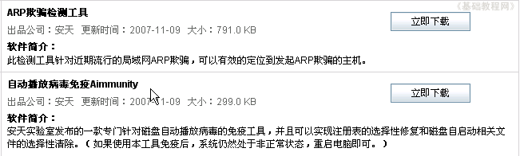
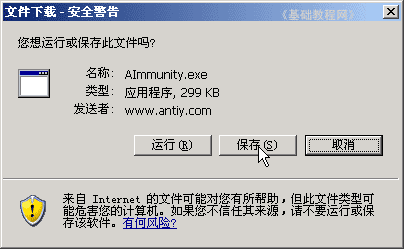
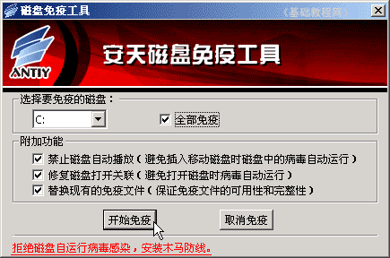
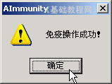

360安全卫士操作基础
八、病毒专杀工具 返回目录
对于一些比较典型的病毒，在安全卫士中可以找到相应的专杀工具，下载以后运行一下即可，下面我们来看一个练习；
1、运行程序
1）在桌面找到一个绿色盾牌的图标，这个就是安全卫士的快捷方式，双击运行360安全卫士；
2）程序运行后，首先进行系统检查，上面有个进度条不断移动，在下面的状态栏里还有升级的提示，
一般来说，绿色是安全的，黄色是警告提醒，红色是发现问题；
2、病毒专杀工具
1）启动完成后，点击上边的“杀毒－病毒专杀工具”标签，进入相应的面板；
2）在中间的列表中，有各个病毒专杀工具，包括名称、大小、出品公司、软件简介等；

3）在每个软件标题的右边，有一个“立即下载”按钮，点击即可下载，出来一个下载提示；

4）下载完成后，找到下载的文件，双击运行，先打勾“全部免疫”然后点击“开始免疫”；

7）出来一个提示，操作成功，以后如果要去掉，就点击旁边的“取消免疫”按钮即可；

本节学习了下载和运行病毒专杀工具的基本方法，如果你成功地完成了练习，请继续学习下一课内容；
本教程由86团学校TeliuTe制作|著作权所有
基础教程网：http://teliute.org/
美丽的校园……
转载和引用本站内容，请保留作者和本站链接。